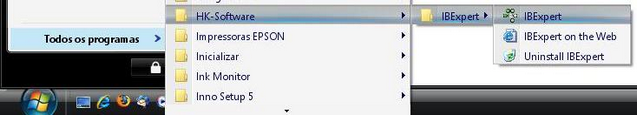
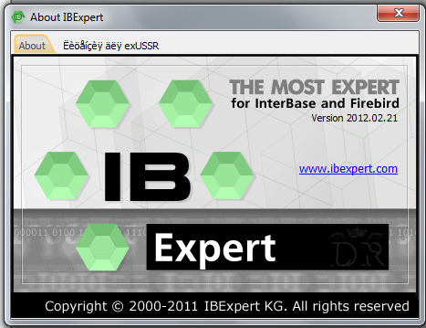
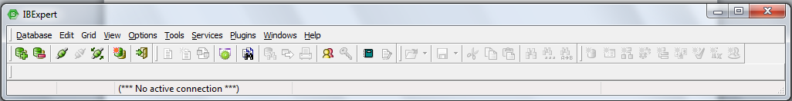
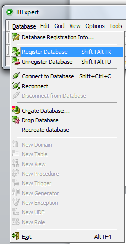
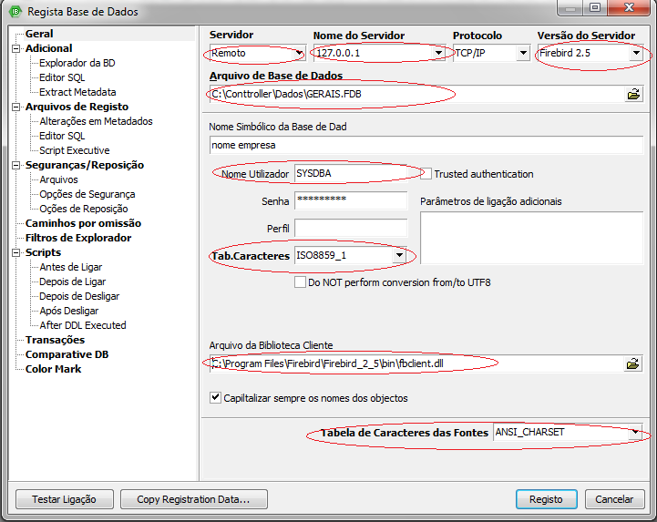
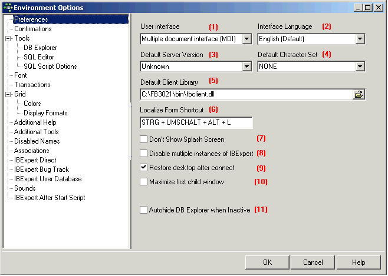

Registra Base |
  
|
Registra Base |
|
Criando e Registrando BD Firebird 2.5 no IBExpert
Neste breve artigo veremos como implementar a criação e o registro de uma base de dados Firebird 1.5 utilizando o IBExpert. O IBExpert é um ferramenta que possibilita o gerenciamento de bases de dados de Interbase e Firebird em diversas versões. O primeiro passo efetuar o download do IBExpert, podemos fazê-lo no endereço: T:\INSTALAR\HIGH-COMMERCE\Utilitarios\ib2012
Concluído o download devemos então iniciar a instalação do software, que na verdade segue todo um padrão de confirmações as quais não abstrairemos nesse artigo. Finalizada a instalação podemos então começar a tratar realmente de nosso artigo, ou seja, vamos implementar nossa base de dados.
Iniciemos então o IBExpert através do caminho:
Iniciar | Todos os Programas | HK-Software | IBExpert | IBExpert

Caminho para iniciar o IBExpert
Iniciado o Aplicativo, você notará que sua interface é bastante simplificada compondo-se apenas da Barra de Ferramentas e do DB Explorer.


Barra de Ferramentas
Passada essa breve apresentação vamos meter a mão na massa...
Para criarmos um nova base de dados devemos acionar a opção Register Database do Menu Database. Feito isso a janela para a criação da nova base será exibida, cabendo-nos preenchê-la:


Janela Register Database
Comentaremos agora cada um dos campos desta janela:
Server à determina o tipo de servidor, se Remoto ou Local. Selecionando a opção remoto podemos optar pela criação em outras máquina de uma rede. Para WIN7 e VISTA SÒ FUNCIONA como REMOTO
Server Name à Caso tenha optado por Remoto no campo anterior, você deve informar aqui o nome ou IP da máquina a ser adotada como “servidor” da base de dados.
Protocol à Indica o protocolo usado para efetuar a comunicação com o servidor.
**Selecionando a Opção de Servidor local os campos Server Name e Protocol são desabilitados.
Server Version à Deve-se informa a versão do banco de dados a ser criado, nosso caso utilizaremos o Firebird 2.5.
Database File à Neste campo, devemos informar o caminho de nossa base de dados seguido do nome da base de dados acrescido de sua extensão.
Ex.: D:\Conttroller\Dados\Gerais.FDB.
Database Alias à É o apelido a ser referenciado o nosso arquivo (BD) nome do empresa.
Client Library Name à aqui devemos informa a biblioteca (.dll) do banco, no nosso caso usaremos a do Firebird com o caminho indicado conforme a figura. (C:\Arquivos de programas\Firebird\Firebird_2_5\bin\fbclient.dll)
Os outros campos são o par Usuário/Senha do Firebird (SYSDBA/masterkey), Deixamos a Senha em branco para segurança.
Fonte Chararcters Set aqui deve ser informada como ANSI_CHARSET
Charset (PADRÃO = ISO8859_1), o Dialeto SQL escolhido foi o 3 e deixamos habilitado a opção para registrar a base de dados após sua criação.
Através do botão Test Connect podemos efetuar o teste em nossa conexão com o banco.
Clicando em Register finalizamos o processo de registro de nossa base de dados. Logo em seguida o nosso Alias (EMPRESA) passa a constar no DBExplorer, dando um duplo clique nele abrimos a conexão com o banco, a partir daí podemos criar tabelas, procedures, etc. de nossa base de dados.

Arquivo registrado e conexão Ativa
Finalizamos assim nossa matéria sobre a criação e o registro de uma base de dados Firebir 2.5 utilizando o IBExpert.
Opções de Ambiente
Opções de Ambiente pode ser encontrado no menu Opções IBExpert . Ele permite que o usuário organize sua IBExpert ambiente de trabalho como ele deseja. É possível, por exemplo, para definir padrões determinados para editores e itens de menu específico, alterar cores ou a fonte do sistema, etc
Preferências
O Preferências janela permite ao usuário especificar certas preferências gerais ou padrões.

Estes incluem:
(1) Interface com o usuário
A lista pull-down oferece as opções de MDI ou SDI .
A interface de usuário é a conexão entre a máquina eo usuário, ou seja, a forma como o software é apresentada ao usuário na tela. A interface de usuário permite que o usuário use o programa e manipular dados.
Sob o menu de Opções IBExpert item, opções de ambiente , a interface do usuário pode ser definida como SDI (Single Document Interface) ouMDI (Multiple Document Interface) .
Quando alterar a interface do usuário de SDI para MDI e vice-versa, IBExpert precisa ser reiniciado para que as alterações tenham efeito.
(2) idioma da interface
O idioma padrão é o Inglês. A lista pull-down oferece as linguagens alternativas a seguir:
●Tcheco
●Holandês
●Inglês
●Francês
●Alemão
●Húngaro
●Italiano
●Japonês
●Polonês
●Português
●Romeno
●Russo
●Espanhol
Você não deveria ser capaz de ver a lista completa dos idiomas na lista drop-down, delete o ibexpert.lng arquivo ou renomear o English.lng arquivo, encontrado no IBExpert diretório Idiomas, para ibexpert.lng , e colocar isso em o principal IBExpert diretório.
Você pode personalizar ou atualizar seu idioma usando o menu de Ferramentas IBExpert item, Localize IBExpert .
(3) a versão do servidor padrão
Se o mesmo banco de dados de versão é usada para todos os projetos, é aconselhável definir um padrão versão aqui. Isto economiza ter de introduzir a versão do servidor de banco de dados cada vez que um banco de dados é registrado. A lista pull-down oferece as versões de banco de dados a seguir:
●Desconhecido (padrão)
●Firebird 1.0
●Firebird 1.5
●Firebird 2.0
●Firebird 2.5
●InterBase 5.x
●InterBase 6,1
●InterBase 6,5
●InterBase 7,0
●InterBase 7,1
●InterBase 7,5
●InterBase 2007
●InterBase 2009
●Yaffil 1,0
(4) conjunto de caracteres padrão
O conjunto de caracteres padrão é o conjunto de caracteres definidos ao criar o banco de dados, e aplicável para todas as áreas do banco de dados menos que seja substituído pelo domínio ou definição de campo. Ele controla não apenas os caracteres disponíveis que podem ser armazenadas e exibidas, mas também a ordem de intercalação. Se não especificado, o default do parâmetro a nenhum, ou seja, valores são armazenados exatamente como digitado.
Por favor, consulte Conjunto de caracteres padrão para mais informações.
Os seguintes conjuntos de caracteres estão disponíveis atualmente:
●ASCII
●BIG_5
●Cyrl
●DOS437
●DOS850
●DOS852
●DOS857
●DOS860
●DOS861
●DOS863
●DOS865
●EUCJ_0208
●GB_2312
●ISO8859 _1
●ISO8859 _2
●KSC_5601
●PRÓXIMO
●NONE
●Octetos
●SJIS0208
●UNICODE_FSS
●UTF8
●WINI1250
●WINI1251
●WINI1252
●WINI1253
●WINI1254
(5) biblioteca cliente padrão
O gds32 DLL. depende do servidor de banco de dados. Firebird tem, para além disso, a sua própria biblioteca, fbclient.dll . O gds32 DLL., no entanto, também incluídas por razões de compatibilidade. Ao trabalhar com o Firebird, ou diferentes Firebird / InterBase ® versões de servidor, a DLL pode ser selecionado aqui, como desejado, basta clicar no Open File ícone à direita do campo, para selecionar a biblioteca necessária.
O Executivo Script sempre usa esta biblioteca cliente padrão a menos que seja anulado usando o CLIENTLIB SET comando diretamente no editor executivo Script.
(6) Localize atalho forma
Aqui você pode especificar o seu próprio atalho para abrir o formulário Localizando , se você não quiser usar o padrão [Ctrl + Shift + Alt + L]. O Formulário de Localizando exibe todas as funções e as combinações respectivas chaves, que também podem ser personalizados. Por favor, consulte Localizando Formulário para mais informações.
Verifique as opções
Os seguintes recursos podem ser verificada ou não como desejava:
(7) Não Mostrar Splash Screen: desativa a tela de abertura IBExpert mostrado enquanto IBExpert está sendo carregado. (8) Desativar várias instâncias do IBExpert : quando marcada esta opção garante que IBExpert . só é aberto uma vez (9) Restaurar área de trabalho após connect : se esta opção estiver marcada, IBExpert irá restaurar todas as formas deixadas em aberto como a última ligação foi encerrada, quando ele se reconecta com o banco de dados. (10) Maximizar janela primeiro filho: o primeiro editor / janela aberta é automaticamente expandido para preencher o máximo área da tela. Esta opção só está disponível no MDI versão. (11) Autohide DB Explorer quando inativo: essa opção oculta o Explorador DB automaticamente, se não estiver focado. Em outras palavras, quando o mouse é posicionado sobre a área esquerda, o Explorer DB aparece; quando o mouse é removido para começar a trabalhar em uma janela do editor ou da criança, o Explorer DB é misturado para fora, oferecendo uma área de trabalho maior.